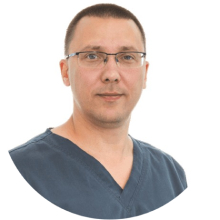
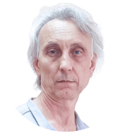
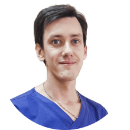

Клиника флебологии Vascul Сlinic в Дмитрове
Сеть специализированных клиник по лечению заболеваний вен
-
Индивидуальный подход
-
Современная клиника в Дмитрове
-
Опытные специалисты
-
Операции без разрезов
Клиника современной флебологии в Дмитрове поможет вам избавиться от заболеваний вен. Команда опытных высококвалифицированных флебологов готова вернуть вас к привычному образу жизни, без физического и эстетического дискомфорта.
Мы гарантируем индивидуальный подход, высокоточную диагностикуи оптимальные схемы лечения. В частности хирурги-флебологи практикуют операции без разрезов и госпитализации, что сокращает восстановительный период до минимума.
Почему нужно обращаться к нам?
-
Специализация по флебологии более 10 лет
-
Врачи с многолетним опытом
-
Лечение вен лазером выполняется амбулаторно
-
Наблюдаем по гарантии 5 лет
-
Активные исследования в лабораториях
Гарантируем результаты лечения
3 800 ЭВЛО выполнили наши специалисты за последние 5 лет
5 лет гарантии на результаты лечения лазером
-

Максимов Сергей Владимирович
Врач-хирург, флеболог, кандидат медицинских наук
-

Сорокин Владимир Евгеньевич
Врач ультразвуковой диагностики высшей квалификации
-

Смяловский Дмитрий Вадимович
Сосудистый хирург, флеболог

Перед началом любой процедуры необходимо проконсультироваться у врача-флеболога
Первичная консультация хирурга-флеболога
+ Протокол УЗИ-вен
+ План лечения
2500 ₽
FAQ
Наиболее грозным осложнением варикозной болезни является тромбоз вен. Он может возникать как в поверхностных, подкожных венах, так и в глубоких. Связано это с патологическим изменением гемодинамики в расширенных венах, воспалением сосудистой стенки и рядом других факторов. Тромбы могут переходить на глубокие вены и, далее, попадать с током крови в легочные артерии, вызывая тромбоэмболию ТЭЛА). Иногда это может закончиться летально.
Независимо от степени проявления варикоза, нужно обращаться к врачу хирургу- флебологу. Самолечение может привести к нежелательным последствиям. Врач проведет обследование, самостоятельно сделает УЗИ вен — УЗДС нижних конечностей, после чего назначит индивидуальное лечение. Это может быть фармакологическая коррекция, либо малоинвазивная хирургическая манипуляция — ЭВЛО. Мужчины страдают варикозом не реже, поэтому диагностика и лечение аналогичные.
Для профилактики развития варикозной болезни необходимо избегать таких провоцирующих факторов, как избыточный вес (ожирение), длительное статичное положение (сидеть или стоять), чрезмерное увлечение термическими процедурами (бани, горячие ванны), тяжелые физические нагрузки. Также, следует сбалансировано питаться, чтобы исключить запоры, вести активный образ жизни, больше двигаться. Если варикозная болезнь все же развилась, то лечить ее можно только хирургически!
Помимо тромбоза вен существуют также другие неприятные осложнения варикозной болезни, которые возникают довольно часто. Это трофические изменения, венозная экзема и, как крайнее проявление, трофические язвы нижних конечностей. Качество жизни пациента, при этом, существенно страдает, а лечить венозную язву приходится долго и хлопотно.